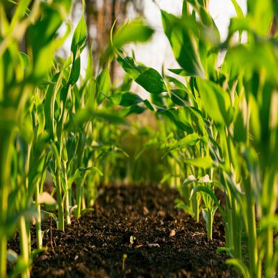

¿Quiénes somos?
Somos una startup, fundada a finales de marzo de 2022 y enfocada en los agricultores y mayoristas de productos orgánicos. Nuestra propuesta es ofrecerles una mejor promoción y comercialización de sus productos agrícolas, entablando relaciones de negocio entre agricultor y mayorista de una manera segura y confiable aprovechando los recursos de medios virtuales.
